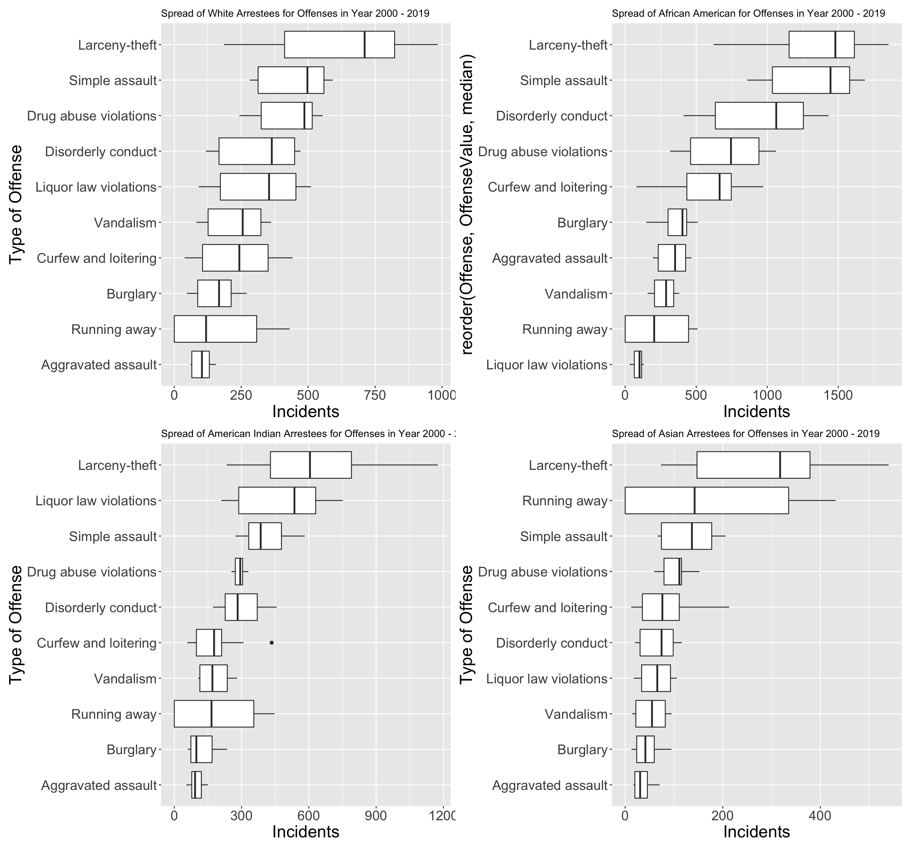
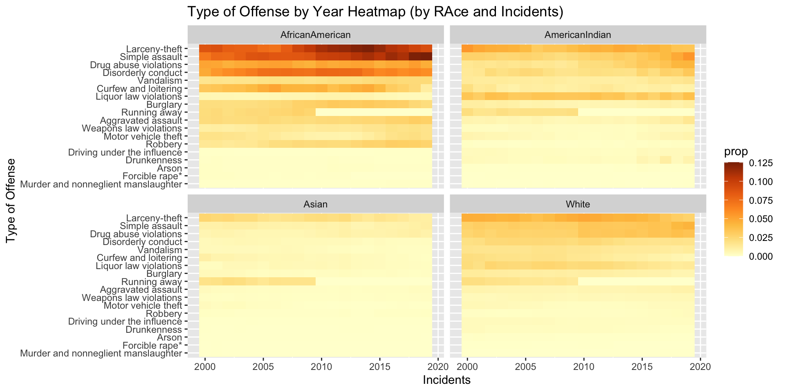
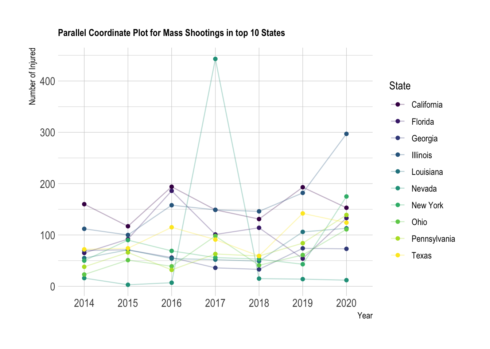
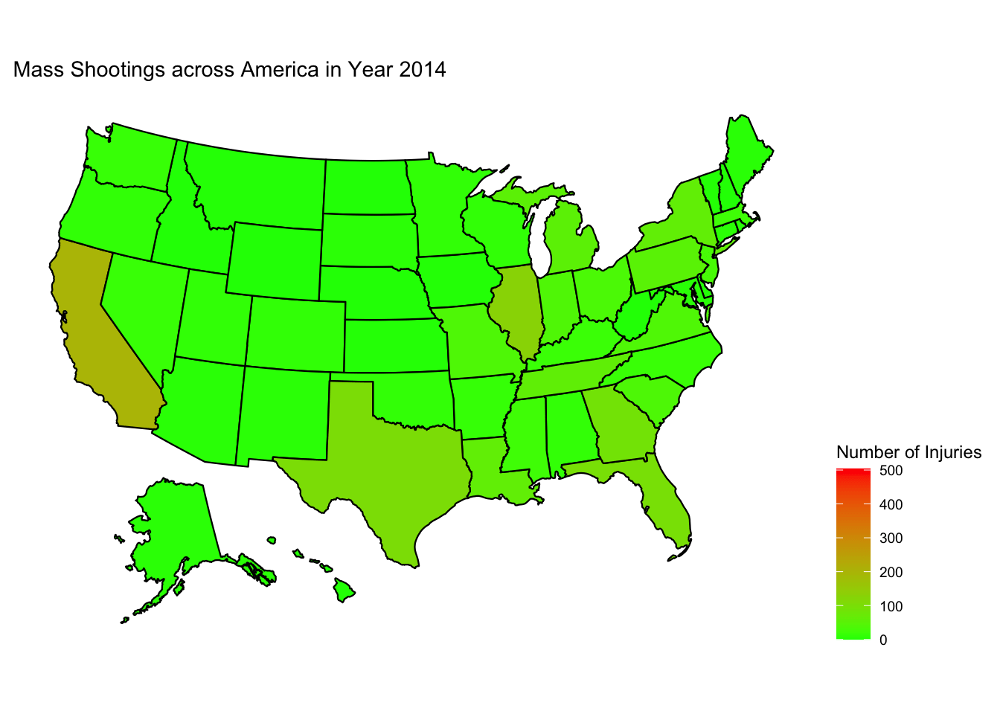

Chapter 5 Results
5.1 Most frequent places for hatecrime
We use a Cleaveland dot plot for finding out the places where a hate crime happens more frequently. This can helps us understand if it’s just the unavailablity of sufficient survilleance or any other motivation that makes these location more prone to such crimes. Thus we can take measures to strengthen the public security in these places.
We can observe that the top 4 spots for hate motivated crimes are:
- Residental Areas
- Roads
- Schools
- Parking Lots
The number of crimes observed in these areas over the last decade far outweigh the incidents observed in other locations such has hotels or grocery store.
Residential areas being the most frequent spots can let us to the assumption that a large portion of these crimes are committed by individuals due to thier bias towards particular people rather than a group perhaps due to the ease of attacking small number rather than going for a large riot.
The presence of schools/colleges corroborates our concerns of the rise of intolerance in the youth especially the teenagers who tend to be easily carried away by agendas propagated on social media platforms like Twitter, Facebook or Instagram.
Recent Instance:
The existence of large number of such crimes in parking spots/garage might suggest that there is a lack of sufficient security or survelliance for these areas usually spread across several acres or on the secluded portions of a building/store might need some reinforcement.
Recent Instance:
5.2 Rate of Crimes over the years

We can observe from the above time series data, that the total number of hate crimes were on a decline till 2013 (i.e President Obama’s second run for office). However it started rising again significantly from 2016 especially leading to a sharp increase (much more than what was observed in the previous decade) by 2017. This was the time during which Donald Trump Jr. was running for the office of US President. This insight might suggest a correlation between the change of political behaviour of the administration and the number of occurances of hate crimes.
Recent Instance:
NYT Article on the rise of hate crime violene during Trump Administration


5.2.1 Adding my Plots (Vijay)
JAR BoxPlot





